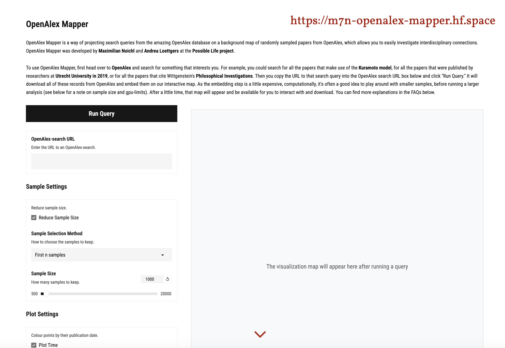

4 Investigating Transdisciplinary Applications with OpenAlex Mapper
Overview
This presentation introduces OpenAlex Mapper, a novel tool crafted to investigate the transdisciplinary application of language models within scholarly contexts. The authors fine-tuned the Specter 2 language model to enhance its capacity for discerning disciplinary boundaries. They then applied it to a substantial dataset of 300,000 English-language articles sourced from the OpenAlex database.
This process involved embedding article abstracts and subsequently reducing their dimensionality to two dimensions using Uniform Manifold Approximation and Projection (UMAP), thereby constructing a foundational map of scholarly disciplines. OpenAlex Mapper empowers users to formulate arbitrary queries against the OpenAlex database, embed the resultant search records, and project them onto this pre-established UMAP model. This functionality facilitates the precise visualisation of the disciplinary distribution of specific concepts, theoretical models, or methodological approaches.
Crucially, the tool addresses long-standing methodological challenges prevalent in the History, Philosophy, and Sociology of Science (HPSS). It enables broader generalisation and robust validation beyond the limitations of small sample sizes, empirically grounds theoretical models, and seamlessly integrates quantitative methods to underpin qualitative investigations. Practical applications include analysing the distribution of model templates, mapping interdisciplinary concepts such as ‘phase transition’, and discerning the usage patterns of distinct methodological approaches across diverse disciplines.
Whilst acknowledging its limitations—concerning OpenAlex data quality, its current English-only scope, and the intrinsic imperfections of UMAP—OpenAlex Mapper stands as a powerful, open-source platform for navigating the intricate landscape of scholarly discourse.
4.1 Accessing the Presentation

Max Neuchel invited attendees to access the presentation materials and interactive components online via www.maxnoichl.eu/talk. This provision enabled the audience to follow the demonstration locally and engage directly with the tool, thereby enhancing the learning experience.
4.2 Workflow and Architecture
The authors developed OpenAlex Mapper to investigate the transdisciplinary applications of scholarly models. The workflow begins with the fine-tuning of the Specter 2 language model, a crucial step undertaken to improve its capacity for discerning subtle disciplinary boundaries. This process involved training the model on articles from similar disciplinary backgrounds, with UMAP dimensionality reduction used to visualise the training’s effectiveness. These adjustments constituted minor modifications rather than an extensive retraining effort.
Subsequently, the team leveraged the OpenAlex database, a comprehensive and openly accessible repository of scholarly material that surpasses Web of Science and Scopus in inclusivity and offers superior query capabilities. From this vast resource, the authors sampled 300,000 random English-language articles, each possessing a well-formed abstract. They then embedded these abstracts using the newly fine-tuned Specter 2 model. To facilitate visualisation, these high-dimensional embeddings underwent dimensionality reduction to two dimensions using UMAP, with the trained UMAP model being carefully preserved for future use.
The core functionality of OpenAlex Mapper allows users to submit arbitrary queries to the OpenAlex database. The tool downloads the relevant records—typically the first thousand—and processes their abstracts through the identical language model. These new embeddings are then projected onto the pre-existing UMAP model, ensuring they occupy positions consistent with their placement during the original layout process. This inherent feature of UMAP significantly streamlines the projection of new data onto the established disciplinary map.
4.3 Interactive Visualisation and HPSS Utility
OpenAlex Mapper provides an intuitive, interactive interface for conducting complex scholarly investigations. A user initiates a query by searching for a topic within OpenAlex and then simply pastes the resulting URL into the Mapper. The backend promptly downloads a specified number of records and proceeds to embed their abstracts. If enabled, the system also processes the citation graph to enrich the analytical output.
The tool generates a clear visualisation: a projection of the search results onto a pre-established grey base map. This interactive map enables users to explore the disciplinary distribution of their queried terms, such as ‘coriander in epidemiology’ or ‘scale-free network models’. One can delve into specific points on the map to understand the contextual usage of terms or concepts.
Crucially, OpenAlex Mapper offers significant utility for the History, Philosophy, and Sociology of Science (HPSS). It directly addresses the challenges of generalisation and validation often encountered with small samples and case studies. Furthermore, the tool facilitates the empirical grounding of theoretical models, enabling researchers to ascertain the real-world prevalence or disciplinary ‘location’ of concepts like ‘The Hopfield Model’. Beyond this, it strategically integrates quantitative methods to provide a robust empirical foundation for subsequent qualitative investigations, thereby enhancing the rigour of HPSS research.
4.4 Investigating Model Templates

OpenAlex Mapper has proven instrumental in the ongoing investigation of model templates, a concept central to contemporary debates concerning model transfer within scientific inquiry. Philosophers of science, building on foundational discussions by Humphreys (2004) and Knuuttila and Loettgers (2020), conceptualise model templates as a ‘structuring discipline’. This represents models of highly similar structure that emerge across disparate scientific fields, suggesting a framework that organises scientific knowledge orthogonally to traditional disciplinary boundaries.
Using the tool, the authors have revealed that distinct model templates manifest in specific, non-continuous regions across the base map, providing valuable empirical insights into their distribution.
4.5 Analysing Interdisciplinary Concepts

Beyond model templates, OpenAlex Mapper facilitates the analysis of concept distribution across extensive, interdisciplinary samples. The authors have, for instance, generated a map illustrating the prevalence of ‘phase transition’ in contrast with ‘emergence’, which is depicted in orange.
This capability significantly broadens the scope of conceptual analysis in interdisciplinary contexts, a domain where traditional methods often struggle to acquire specific, comprehensive datasets. This application aligns with the work of Malaterre, Chartier, and Lareau (2020), who have explored similar themes.
4.6 Mapping Methodological Debates

OpenAlex Mapper also enables the mapping of methodological distributions, revealing where specific techniques are employed within interdisciplinary contexts. This application holds particular relevance for ongoing philosophical debates concerning the role of machine learning in scientific inquiry and the concept of ‘theory-free science’.
As an illustrative example, the authors compared the disciplinary spread of the Random Forest model, a prominent machine learning technique, with that of Logistic Regression, a classical statistical method. The analysis revealed distinct patterns in their distribution, prompting profound philosophical questions. Why do particular disciplines, such as neuroscience, predominantly utilise random forest models, whilst fields like psychiatry tend to favour logistic regressions? Understanding these patterns offers insights into the epistemological choices underpinning methodological adoption, drawing upon the foundational works of Breiman (2001), Bzdok, Altman, and Krzywinski (2018), and Andrews (n.d.).
4.7 Qualifications and Limitations

Whilst powerful, OpenAlex Mapper operates with several inherent qualifications and limitations that require careful consideration.
Data Source: Its efficacy relies on the OpenAlex database. Although the data quality is reasonable compared to other sources, it is not perfect, necessitating a constant awareness of potential inconsistencies.
Language Scope: The current methodology employs an English-only language model, which restricts the scope of analysis. Future developments could incorporate multilingual models, though high-quality, science-trained versions remain scarce.
Abstract Dependency: The embedding process is contingent upon the availability of well-formed abstracts or informative titles within the source material.
UMAP Imperfections: The reliance on the UMAP algorithm introduces specific trade-offs. As a stochastic algorithm, each output represents only one of many possible configurations. Moreover, the algorithm must compromise when reducing hundreds of dimensions from the Specter language model into two, leading to unavoidable distortions and misalignments within the projected map.
4.8 Conclusion

The presentation materials are accessible online for further review. In addition, a comprehensive working paper has been prepared, offering a more detailed explanation of the technical aspects discussed. The presenter expressed his gratitude for the audience’s attention and invited questions.